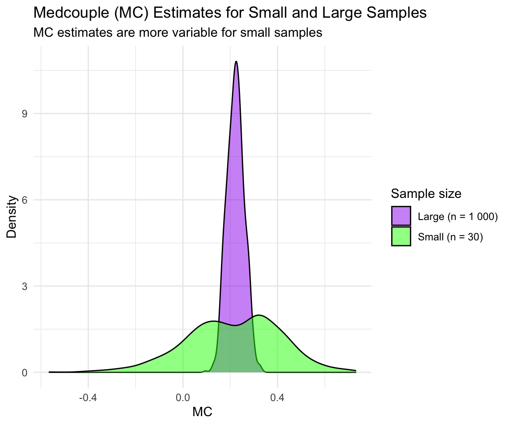
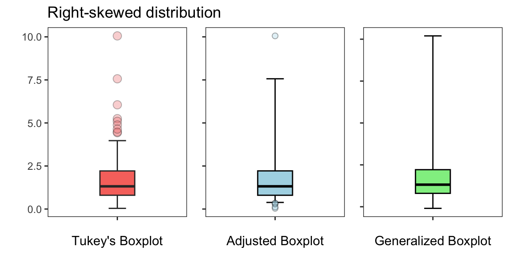

Beyond Standard Boxplot: The Adjusted and Generalized Boxplots
Preprocessing
Chemometrics
Machine Learning
Outliers
Data Visualization
Boxplots, also known as box-and-whisker plots, have been a cornerstone of data visualization since their introduction by John Tukey in the late 1970s. Despite their enduring utility, boxplot assumes a symmetrical mesokurtic distribution and might misrepresent datasets with skewness or heavy tails. Alternative approaches have been proposed to address these limitations.
Proposed by Tukey in 1977 [1], a boxplot is constructed using five key summary statistics: the minimum, first quartile (Q1), median, third quartile (Q3), and maximum. These elements are complemented by whiskers, which typically extend to 1.5 times the interquartile range (IQR = Q3 - Q1) beyond Q1 and Q3, respectively. Data points outside this range are flagged as potential outliers.
The ends of the whiskers are called adjacent values. They are the smallest and largest values not flagged outliers. Moreover, since IQR has a breakdown point of 0.25, it takes more than 25% of the data to be contaminated by outliers for the masking effect to occur. For example, in the Figure below, we show how the quartiles and therefore IQR are significantly influenced by the outliers, highlighting the breakdown point. After replacing 25% of the data with extreme outliers, the IQR increased drastically, from 13 (clean data) to 136 (contaminated data). This demonstrates that with 25% contamination, the IQR becomes unreliable as a measure of spread.
Boxplots are a widely used tool for visualizing data distributions, particularly when the data exhibit a symmetrical mesokurtic distribution. However, its effectiveness diminishes when dealing with skewed data. In such cases, the boxplot can misrepresent the dataset’s nuances—most notably by classifying an excessive number of larger values as outliers when the distribution is skewed. Recognizing this limitation, Hubert and Vandervieren [2] introduced a refined version of Tukey’s boxplot rule. Their approach incorporates a robust measure of skewness, allowing for a more accurate depiction of asymmetrical distributions while preserving the simplicity and interpretability of Tukey’s boxplot.
The Adjusted Boxplot
In 2004, Brys et al. [3] introduced the medcouple (MC), which is a robust statistic used to measure the skewness of a distribution. Unlike traditional measures of skewness that are sensitive to outliers, MC focuses on the median and the IQR, making it less affected by extreme values. It is based on the difference between left and right data spreads relative to the median. MC is bounded between −1 and 1. A value of 0 indicates a perfectly symmetric distribution, while positive values signify a right-tailed (positively skewed) distribution, and negative values correspond to a left-tailed (negatively skewed) distribution. Importantly, this measure is most effective for moderately skewed distributions, particularly when the absolute value of MC is less than or equal to 0.6 (\(|\text{MC}| \leq 0.6\)). MC is given by:
where, \(x_i\) and \(x_j\) are data points from the sample, \(m\) is the median of the sample, and \(\text{med}\{\cdot\}\) denotes the median operator.
To address the limitation of Tukey’s boxplot in handling skewed data, Hubert and Vandervieren [2] introduced the adjusted boxplot for skewed distribution. This method modifies the whisker length based on the MC. Specifically, the upper whisker extends further for right-skewed data, and the lower whisker extends further for left-skewed data. This new approch modifies the traditional boxplot fences to account for skewness in the data using the exponential function of MC as follows:
where, \(k\) is the fence factor. Hubert and Vandervieren [2] have optimized the adjusted boxplot for \(k = 1.5\). In the next Figure, we compare Tukey’s boxplot (left) with the adjusted boxplot (right), applied to a skewed data. The adjusted boxplot shows fewer outliers for the skewed data, reflecting its ability to handle skewness better.
The adjusted boxplot has garnered attention for its ability to handle skewed data, even earning a mention on platforms like Wikipedia. However, it is not without its critiques.
For example, Bruffaerts et al. [4] pointed out that the whiskers in the adjusted boxplot are designed to achieve a fixed outlier detection rate of 0.7%. While this threshold may be suitable for some applications, the process becomes cumbersome if one wishes to adopt a different detection rate. It requires re-running the simulations to determine a new tuning constant or fence factor (\(k\)). Moreover, for datasets with heavy-tailed distributions, the adjusted boxplot may still misclassify observations, as the whisker adjustment relies solely on skewness and not on tail behavior. Another significant issue lies in its dependence on MC. While MC is effective for large samples, its estimation can be imprecise for small sample sizes.
The Figure below illustrates the behavior of MC estimates for small and large sample sizes using density plots. To achieve this, we generated multiple random samples from a skewed Gamma distribution and examined the variability of the MC estimates across these sample sizes. For small sample sizes, the MC estimates exhibit significant variability, reflecting its reduced robustness in such cases. In contrast, as the sample size increases, the MC estimates stabilize and converge to a consistent value, demonstrating its improved precision and reliability with larger data.
Show the code
set.seed(123)calculate_MC <-function(sample_size, num_simulations =1000) { mc_values <-numeric(num_simulations)for (i in1:num_simulations) { data <-rgamma(sample_size, shape =2, scale =2) mc_values[i] <-mc(data) }return(mc_values)}small_sample_size <-30large_sample_size <-1000mc_small <-calculate_MC(small_sample_size)mc_large <-calculate_MC(large_sample_size)mc_data <-data.frame(MC =c(mc_small, mc_large),Sample_Size =rep(c("Small (n = 30)", "Large (n = 1 000)"), each =length(mc_small)))ggplot(mc_data, aes(x = MC, fill = Sample_Size)) +geom_density(alpha =0.5) +labs(title ="Medcouple (MC) Estimates for Small and Large Samples",subtitle ="MC estimates are more variable for small samples",x ="MC",y ="Density",fill ="Sample size" ) +scale_fill_manual(values =c("purple", "green")) +theme_minimal()

In response to these shortcomings, Bruffaerts et al. [4] proposed an alternative method to address skewness and heavy-tailed distributions. Their approach introduces a rank-preserving transformation that allows the data to conform to a Tukey \(g\)-\(h\) distribution.
The Generalized Boxplot
In 1977, Tukey introduced a family of distributions through two nonlinear transformations, giving rise to what is now known as Tukey \(g\)-\(h\) distributions [5,6]. These distributions are widely used in robust statistics and flexible modeling due to their ability to accommodate a range of skewness and kurtosis levels. Tukey \(g\)-\(h\) distribution is defined by applying two transformations, \(g\) (skewness) and \(h\) (kurtosis), to a standard normal random variable \(Z \sim \mathcal{N}(0, 1)\). The resulting transformation is expressed by:
\[
T_{g,h}(Z) = \frac{e^{gZ}-1}{g} \cdot e^{h\frac{Z^2}{2}} \quad \text{with} \quad g \neq 0, h \in \mathbb{R}
\]
By adjusting \(g\) and \(h\), the Tukey \(g\)-\(h\) distribution can model a wide variety of distribution, from symmetric to skewed, and from light-tailed to heavy-tailed distributions.
The constants \(g\) and \(h\), can be estimated from the empirical quantiles as follows:
\[
\hat{g} = \frac{1}{z_p} \text{ln}\left(-\frac{Q_p(\{x_j\})}{Q_{1-p}(\{x_j\})}\right),
\quad
\hat{h} = \frac{2}{z_p^2} \text{ln}\left(-\hat{g}\frac{Q_p(\{x_j\}) \cdot Q_{1-p}(\{x_j\})}{Q_p(\{x_j\}) + Q_{1-p}(\{x_j\})}\right)
\]where \(z_p\) is the quantile of order \(p\) of the standard normal distribution. \(Q_p\) and \(Q_{1-p}\) are the empirical quantiles of order \(p\) (\(0.5<p<1\)) and \(1-p\) of the univariate data \(X = \{x_j\} = \{x_1, \cdots, x_n\}\).
The generalized boxplot as proposed by Bruffaerts et al. [4] begins by applying a rank-preserving transformation to the data. This transformation maps the original observations onto the unit interval (0, 1), maintaining the order of the data points while capturing key distributional features like skewness and tail behavior. Then, an inverse normal transformation is applied, similar to rank-based approaches. This transformed distribution can be fine-tuned using the Tukey \(g\)-\(h\) distribution, whose quantiles are used to set the boxplot whiskers.
The Figures below illustrate a comparison of Tukey’s boxplot, the adjusted boxplot, and the generalized boxplot across three distinct types of data distributions: (i) a normal distribution, (ii) a right-skewed distribution, and (iii) a heavy-tailed distribution. The Figures show how each method performs and adapts to the specific characteristics of these distributions, effectively balancing sensitivity to outliers without over-identifying them.
For a symmetric distribution, all three boxplots produce similar results as expected.
For a right-skewed distribution, Tukey’s boxplot overestimates the number of outliers, while the adjusted and generalized boxplots provide a better representation of the underlying data distribution. The generalized boxplot, in particular, offers the most flexible approach by accommodating skewness.

For a heavy-tailed distribution, Tukey’s boxplot inaccurately identifies an excessive number of outliers due to its assumption of symmetry and limited adaptability to extreme tails. The adjusted boxplot improved upon Tukey’s boxplot by accounting for skewness in the data, yet it still struggles to effectively handle the variability and extreme values inherent in heavy-tailed distributions. In contrast, the generalized boxplot proves to be a more robust and versatile method. Its whiskers and overall box structure more accurately reflect the underlying data distribution, demonstrating its ability to adapt to both skewness and tail heaviness more effectively than the other two methods.
Conclusions
By comparing the three boxplot approaches, we show the limitations of Tukey’s boxplot when applied to skewed or heavy-tailed data. While Tukey’s method assumes symmetry and often flags excessive outliers, the adjusted boxplot improves this by incorporating a skewness measure (medcouple). The generalized boxplot provides the most robust solution by flexibly adapting to both skewness and tail heaviness through the Tukey \(g\)-\(h\) distribution. Overall, the adjusted and generalized boxplots are better suited for non-symmetric data, with the generalized boxplot offering the most robust approach.
Hubert, M., Vandervieren, E., (2008). An adjusted boxplot for skewed distributions. Computational Statistics and Data Analysis, 52, 5186-5201.
Brys, G., Hubert, M., Struyf, A., (2004). A robust measure of skewness. Journal of Computational and Graphical Statistics, 13, 996-1017.
Bruffaerts, C., Verardi, V., Vermandele, C., (2014). A generalized boxplot for skewed and heavy-tailed distributions. Statistics & Probability Letters, 95, 110–117.
Tukey, J.W., (1977). Modern techniques in data analysis. NSF‐sponsored regional research conference at Southeastern Massachusetts University, North Dartmouth, MA.
Martinez, J., Iglewicz, B., (1984). Some properties of the Tukey g and h family of distributions. Communications in Statistics: Theory and Methods, 13, 353–369.